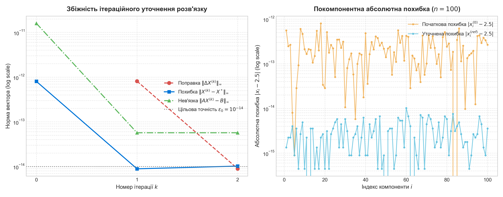

Вивчити метод розв’язку системи лінійних алгебраїчних рівнянь за допомогою LU-розкладу (алгоритм Дулітла) та ітераційний метод уточнення розв’язку СЛАР. Дослідити алгоритмічну реалізацію розкладу матриці A на добуток нижньої трикутної матриці L та верхньої унітрикутної матриці U (з одиничною головною діагоналлю), розв'язання двох трикутних систем підстановками, оцінку точності знайденого наближення та збіжність ітераційного уточнення до заданого порогу похибки eps0 = 10−14.
LU-розклад полягає у представленні квадратної матриці A розмірності n × n у вигляді добутку двох трикутних матриць:
де L = (lik) — нижня трикутна матриця (lik = 0 при k > i), а U = (uki) — верхня трикутна матриця з одиницями на головній діагоналі: ukk = 1 для всіх k = 1, …, n, та uki = 0 при k > i.
Згідно з означенням матричного множення елемент aik визначається сумою:
Звідси отримуємо рекурентний алгоритм послідовного знаходження стовпців L та рядків U:
Вихідна система лінійних алгебраїчних рівнянь A X = B з урахуванням розкладу A = L U перетворюється на систему L U X = B. Її розв'язок знаходиться послідовним розв'язанням двох трикутних систем:
Нехай для системи лінійних алгебраїчних рівнянь A X = B знайдено деякий початковий розв'язок X(0). Введемо позначення:
Підставивши точний розв'язок X = X(k) + ΔX(k) у вихідну систему, маємо:
Розв'язавши цю систему рівнянь, знаходимо поправку ΔX(k). Оскільки матриця системи A залишається тією ж самою, розв'язання виконується за допомогою раніше знайденого LU-розкладу (послідовно L Z = R(k) та U ΔX(k) = Z), що вимагає лише O(n2) дій замість O(n3).
Обчислюємо уточнене значення розв'язку:
Умовами закінчення ітераційної процедури є виконання співвідношень:
Якщо умови виконуються, X(k+1) приймається як розв'язок із заданою точністю. Якщо ні, приймаємо X(k) = X(k+1) і повторюємо ітераційний крок.
У програмі main.py реалізовано повний набір функцій згідно з вимогами пункту 2:
generate_matrix(n, low, high, seed): генерація випадкової матриці A розмірності n × n (n = 100);write_matrix(A, filename) / read_matrix(filename): збереження та зчитування матриці A у/з текстового файлу;write_vector(b, filename) / read_vector(filename): збереження та зчитування вектора вільних членів B у/з текстового файлу;lu_decomposition(A): обчислення LU-розкладу квадратної матриці методом Дулітла;write_lu(L, U, filename): запис знайдених матриць L та U у текстовий файл;solve_lu(L, U, b): розв'язання системи лінійних рівнянь за допомогою факторів L та U;matrix_vector_mult(A, x): обчислення добутку матриці на вектор з використанням math.fsum для мінімізації похибки додавання;vector_norm(v, ord): обчислення векторних норм (зокрема рівномірної ||v||∞);iterative_refinement(A, L, U, b, x0, ...): реалізація ітераційного уточнення розв'язку.Згенеровано матрицю A розмірності 100 × 100. Задано точний розв'язок xi* = 2.5 (i = 1, …, 100). Обчислено вектор вільних членів bi = ∑j=1n aij xj*.
Характеристики початкового розв'язку X(0):
Динаміка ітераційного уточнення розв'язку СЛАР (до порогу eps0 = 10−14):
| Ітерація k | Норма поправки ||ΔX(k)||∞ | Похибка ||X(k) − X*||∞ | Нев'язка ||AX(k) − B||∞ | Статус |
|---|---|---|---|---|
| 0 | — (початковий) | 8.0291e-13 | 1.5945e-11 | Початок |
| 1 | 8.1038e-13 | 8.8818e-15 | 5.6843e-14 | В процесі |
| 2 | 8.9350e-15 | 1.0214e-14 | 5.6843e-14 | Досягнуто |
Порівняння значень розв'язку для вибіркових компонент вектора (n = 100):
| Індекс i | Точне xi* | Початкове xi(0) | Похибка поч. | Уточнене xi(ref) | Похибка уточн. |
|---|---|---|---|---|---|
| 1 | 2.5 | 2.49999999999944 | 5.5778e-13 | 2.5000000000000013 | 1.3323e-15 |
| 10 | 2.5 | 2.49999999999979 | 2.1139e-13 | 2.5000000000000004 | 4.4409e-16 |
| 20 | 2.5 | 2.49999999999997 | 2.8422e-14 | 2.5000000000000004 | 4.4409e-16 |
| 30 | 2.5 | 2.50000000000001 | 1.0658e-14 | 2.4999999999999942 | 5.7732e-15 |
| 40 | 2.5 | 2.50000000000048 | 4.8317e-13 | 2.4999999999999991 | 8.8818e-16 |
| 50 | 2.5 | 2.49999999999986 | 1.4033e-13 | 2.5000000000000000 | 0.0000e+00 |
| 60 | 2.5 | 2.50000000000042 | 4.2100e-13 | 2.4999999999999898 | 1.0214e-14 |
| 70 | 2.5 | 2.49999999999990 | 1.0125e-13 | 2.4999999999999956 | 4.4409e-15 |
| 80 | 2.5 | 2.50000000000024 | 2.4158e-13 | 2.4999999999999942 | 5.7732e-15 |
| 90 | 2.5 | 2.49999999999987 | 1.3323e-13 | 2.4999999999999982 | 1.7764e-15 |
| 100 | 2.5 | 2.50000000000027 | 2.6557e-13 | 2.4999999999999964 | 3.5527e-15 |
На рис. 1 наведено результати експериментального дослідження збіжності ітераційного методу уточнення розв'язку СЛАР та покомпонентний профіль розподілу похибок для всіх 100 координат.

Аналіз графічних матеріалів:
Нижче наведено повний вихідний код програми (файл main.py), розроблений мовою Python з використанням бібліотек numpy та matplotlib:
import math
import os
import matplotlib.pyplot as plt
import numpy as np
def generate_matrix(n: int = 100, low: float = -10.0, high: float = 10.0, seed: int = 42) -> np.ndarray:
"""
Генерація випадкової квадратної матриці розмірності n x n.
Використовується фіксований seed для відтворюваності результатів.
"""
rng = np.random.default_rng(seed)
# Генеруємо рівномірно розподілені випадкові дійсні числа
A = rng.uniform(low, high, (n, n))
return A
def write_matrix(matrix: np.ndarray, filename: str) -> None:
"""
Запис матриці у текстовий файл.
"""
with open(filename, "w", encoding="utf-8") as f:
f.write(f"# Розмірність: {matrix.shape[0]}x{matrix.shape[1]}\n")
for row in matrix:
f.write(" ".join(f"{val:24.17e}" for val in row) + "\n")
def read_matrix(filename: str) -> np.ndarray:
"""
Зчитування матриці з текстового файлу.
"""
rows = []
with open(filename, "r", encoding="utf-8") as f:
for line in f:
line = line.strip()
if not line or line.startswith("#"):
continue
rows.append([float(x) for x in line.split()])
return np.array(rows, dtype=np.float64)
def write_vector(vector: np.ndarray, filename: str) -> None:
"""
Запис вектора у текстовий файл.
"""
with open(filename, "w", encoding="utf-8") as f:
f.write(f"# Розмірність: {len(vector)}\n")
for val in vector:
f.write(f"{val:24.17e}\n")
def read_vector(filename: str) -> np.ndarray:
"""
Зчитування вектора з текстового файлу.
"""
values = []
with open(filename, "r", encoding="utf-8") as f:
for line in f:
line = line.strip()
if not line or line.startswith("#"):
continue
values.append(float(line))
return np.array(values, dtype=np.float64)
def matrix_vector_mult(A: np.ndarray, x: np.ndarray) -> np.ndarray:
"""
Обчислення добутку матриці на вектор: b_i = sum_{j=1}^n A[i, j] * x[j].
Для мінімізації похибки округлення використано math.fsum.
"""
n, m = A.shape
if m != len(x):
raise ValueError(f"Невідповідність розмірностей: матриця {A.shape}, вектор {len(x)}")
result = np.zeros(n, dtype=np.float64)
for i in range(n):
result[i] = math.fsum(A[i, j] * x[j] for j in range(m))
return result
def vector_norm(v: np.ndarray, ord=np.inf) -> float:
"""
Обчислення норми вектора. За замовчуванням обчислюється нескінченна (максимальна) норма.
"""
if ord == np.inf:
return float(np.max(np.abs(v)))
elif ord == 1:
return float(np.sum(np.abs(v)))
elif ord == 2:
return float(np.sqrt(np.sum(v ** 2)))
else:
return float(np.linalg.norm(v, ord=ord))
def lu_decomposition(A: np.ndarray) -> tuple[np.ndarray, np.ndarray]:
"""
Знаходження LU-розкладу матриці A (алгоритм Дулітла).
Представлення A = L * U, де:
- L - нижня трикутна матриця (l_{ij} = 0 при j > i)
- U - верхня трикутна матриця з одиницями на головній діагоналі (u_{ii} = 1, u_{ji} = 0 при j > i)
Формули обчислення:
k-й стовпець L (i >= k):
l_{ik} = a_{ik} - sum_{j=1}^{k-1} l_{ij} * u_{jk}
k-й рядок U (i > k):
u_{ki} = (a_{ki} - sum_{j=1}^{k-1} l_{kj} * u_{ji}) / l_{kk}
"""
n = A.shape[0]
if A.shape[0] != A.shape[1]:
raise ValueError("Матриця повинна бути квадратною")
L = np.zeros((n, n), dtype=np.float64)
U = np.eye(n, dtype=np.float64)
for k in range(n):
# 1. Обчислюємо k-й стовпець матриці L для i >= k
for i in range(k, n):
s = math.fsum(L[i, j] * U[j, k] for j in range(k))
L[i, k] = A[i, k] - s
# Перевірка на нульовий ведучий елемент
if abs(L[k, k]) < 1e-15:
raise ZeroDivisionError(f"Ділення на нуль: l_{{{k},{k}}} = {L[k, k]} є надто малим")
# 2. Обчислюємо k-й рядок матриці U для i > k
for i in range(k + 1, n):
s = math.fsum(L[k, j] * U[j, i] for j in range(k))
U[k, i] = (A[k, i] - s) / L[k, k]
return L, U
def write_lu(L: np.ndarray, U: np.ndarray, filename: str) -> None:
"""
Запис LU-розкладу матриці у текстовий файл.
"""
n = L.shape[0]
with open(filename, "w", encoding="utf-8") as f:
f.write(f"# LU-розклад матриці розмірності {n}x{n}\n")
f.write("# Матриця L (нижня трикутна):\n")
for row in L:
f.write(" ".join(f"{val:24.17e}" for val in row) + "\n")
f.write("\n# Матриця U (верхня трикутна з одиничною діагоналлю):\n")
for row in U:
f.write(" ".join(f"{val:24.17e}" for val in row) + "\n")
def solve_lu(L: np.ndarray, U: np.ndarray, b: np.ndarray) -> np.ndarray:
"""
Розв'язання системи лінійних рівнянь A*X = B за допомогою LU-розкладу.
Послідовно розв'язуються дві трикутні системи:
1) L * Z = B (прямий хід / пряма підстановка):
z_1 = b_1 / l_{11}
z_k = (b_k - sum_{j=1}^{k-1} l_{kj} * z_j) / l_{kk}, k = 2..n
2) U * X = Z (зворотний хід / зворотна підстановка, u_{ii} = 1):
x_n = z_n
x_k = z_k - sum_{j=k+1}^n u_{kj} * x_j, k = n-1..1
"""
n = len(b)
z = np.zeros(n, dtype=np.float64)
# 1. Прямий хід: L * Z = B
z[0] = b[0] / L[0, 0]
for k in range(1, n):
s = math.fsum(L[k, j] * z[j] for j in range(k))
z[k] = (b[k] - s) / L[k, k]
# 2. Зворотний хід: U * X = Z
x = np.zeros(n, dtype=np.float64)
x[-1] = z[-1]
for k in range(n - 2, -1, -1):
s = math.fsum(U[k, j] * x[j] for j in range(k + 1, n))
x[k] = z[k] - s
return x
def iterative_refinement(
A: np.ndarray,
L: np.ndarray,
U: np.ndarray,
b: np.ndarray,
x0: np.ndarray,
x_exact: np.ndarray | None = None,
eps0: float = 1e-14,
max_iter: int = 50,
) -> tuple[np.ndarray, list[dict]]:
"""
Ітераційний метод уточнення розв'язку СЛАР.
На кожній ітерації:
1. R^(k) = B - A * X^(k)
2. Розв'язуємо A * DeltaX^(k) = R^(k) за допомогою наявного LU-розкладу:
L * Z = R^(k), U * DeltaX^(k) = Z
3. X^(k+1) = X^(k) + DeltaX^(k)
4. Перевірка критерію зупинки: ||DeltaX^(k)||_inf <= eps0
"""
x = x0.copy()
history = []
# Початковий стан (ітерація 0)
r0 = b - matrix_vector_mult(A, x)
res0_norm = vector_norm(r0)
err0_norm = vector_norm(x - x_exact) if x_exact is not None else None
history.append({
"iteration": 0,
"delta_norm": float("nan"),
"residual_norm": res0_norm,
"error_norm": err0_norm,
"converged": False,
})
for k in range(1, max_iter + 1):
# 1. Вектор нев'язки R^(k-1) = B - A * X^(k-1)
r = b - matrix_vector_mult(A, x)
# 2. Знаходження похибки DeltaX: A * DeltaX = R
delta_x = solve_lu(L, U, r)
delta_norm = vector_norm(delta_x)
# 3. Уточнення розв'язку
x = x + delta_x
# 4. Оцінка оновленої нев'язки та похибки
r_new = b - matrix_vector_mult(A, x)
res_norm = vector_norm(r_new)
err_norm = vector_norm(x - x_exact) if x_exact is not None else None
converged = delta_norm <= eps0
history.append({
"iteration": k,
"delta_norm": delta_norm,
"residual_norm": res_norm,
"error_norm": err_norm,
"converged": converged,
})
if converged:
break
return x, history
def main():
base_dir = os.path.dirname(os.path.abspath(__file__))
matrix_file = os.path.join(base_dir, "matrix_A.txt")
vector_file = os.path.join(base_dir, "vector_b.txt")
lu_file = os.path.join(base_dir, "lu_decomposition.txt")
plot_file = os.path.join(base_dir, "lab6_convergence.png")
print("=" * 70)
print("Лабораторна робота №6: LU-розклад та ітераційне уточнення розв'язку СЛАР")
print("=" * 70)
# 1. Генерація матриці A розмірності 100x100 та вектора b
n = 100
exact_val = 2.5
print(f"\n[Крок 1] Генерація матриці A ({n}x{n}) та вектора b...")
A_gen = generate_matrix(n=n, low=-10.0, high=10.0, seed=42)
write_matrix(A_gen, matrix_file)
print(f" -> Матрицю A успішно збережено у: {os.path.basename(matrix_file)}")
x_exact = np.full(n, exact_val, dtype=np.float64)
b_gen = matrix_vector_mult(A_gen, x_exact)
write_vector(b_gen, vector_file)
print(f" -> Вектор вільних членів B успішно збережено у: {os.path.basename(vector_file)}")
# 2. Зчитування матриці A та вектора b з файлів
print(f"\n[Крок 2] Зчитування даних з текстових файлів...")
A = read_matrix(matrix_file)
b = read_vector(vector_file)
print(f" -> Зчитано матрицю A розмірністю {A.shape} та вектор b розмірністю {len(b)}")
# 3. Знаходження LU-розкладу матриці A та запис у файл
print(f"\n[Крок 3] Виконання LU-розкладу матриці A (алгоритм Дулітла)...")
L, U = lu_decomposition(A)
write_lu(L, U, lu_file)
print(f" -> LU-розклад збережено у: {os.path.basename(lu_file)}")
# Перевірка правильності розкладу: ||A - L*U||_inf
LU_product = L @ U
decomp_error = vector_norm(A - LU_product)
print(f" -> Точність LU-розкладу ||A - L*U||_inf = {decomp_error:.4e}")
# 4. Розв'язання СЛАР за допомогою LU-розкладу
print(f"\n[Крок 4] Розв'язання СЛАР AX = B за допомогою LU-розкладу...")
x0 = solve_lu(L, U, b)
eps_init_res = vector_norm(matrix_vector_mult(A, x0) - b)
eps_init_err = vector_norm(x0 - x_exact)
rel_init_err = eps_init_err / vector_norm(x_exact)
print(f" -> Початковий розв'язок X^(0) знайдено.")
print(f" -> Нев'язка ||AX^(0) - B||_inf: {eps_init_res:.4e}")
print(f" -> Абсолютна похибка ||X^(0) - X*||_inf: {eps_init_err:.4e}")
print(f" -> Відносна похибка ||X^(0) - X*||_inf / ||X*||_inf: {rel_init_err:.4e}")
# 5. Ітераційне уточнення розв'язку до точності eps0 = 1e-14
eps0 = 1e-14
print(f"\n[Крок 5] Ітераційне уточнення розв'язку (цільова точність eps0 = {eps0})...")
x_refined, history = iterative_refinement(
A, L, U, b, x0, x_exact=x_exact, eps0=eps0, max_iter=20
)
print("\nТаблиця збіжності ітераційного уточнення:")
print("-" * 75)
print(f"{'Іт.':>4} | {'||DeltaX||_inf':>16} | {'||X - X*||_inf':>16} | {'||AX - B||_inf':>16} | {'Статус':^10}")
print("-" * 75)
for rec in history:
d_str = f"{rec['delta_norm']:16.4e}" if not math.isnan(rec['delta_norm']) else f"{'початковий':>16}"
err_str = f"{rec['error_norm']:16.4e}"
res_str = f"{rec['residual_norm']:16.4e}"
stat = "Досягнуто" if rec["converged"] else ("Старт" if rec["iteration"] == 0 else "В процесі")
print(f"{rec['iteration']:4d} | {d_str} | {err_str} | {res_str} | {stat:^10}")
print("-" * 75)
num_iters = len(history) - 1
final_err = vector_norm(x_refined - x_exact)
final_res = vector_norm(matrix_vector_mult(A, x_refined) - b)
print(f"\nКількість ітерацій для досягнення eps0 <= {eps0}: {num_iters}")
print(f"Фінальна похибка ||X_refined - X*||_inf: {final_err:.4e}")
print(f"Фінальна нев'язка ||AX_refined - B||_inf: {final_res:.4e}")
# 6. Побудова графіка збіжності та похибок
print(f"\n[Крок 6] Генерація візуалізації (графіків збіжності)...")
plt.style.use("seaborn-v0_8-whitegrid" if "seaborn-v0_8-whitegrid" in plt.style.available else "default")
fig, (ax1, ax2) = plt.subplots(1, 2, figsize=(14, 5.5))
# Графік 1: Збіжність похибки та нев'язки за ітераціями
iters = [rec["iteration"] for rec in history]
deltas = [rec["delta_norm"] for rec in history]
errors = [rec["error_norm"] for rec in history]
residuals = [rec["residual_norm"] for rec in history]
ax1.semilogy(iters[1:], deltas[1:], "o--", color="#d9534f", label=r"Поправка $\|\Delta X^{(k)}\|_\infty$", lw=2, ms=7)
ax1.semilogy(iters, errors, "s-", color="#0275d8", label=r"Похибка $\|X^{(k)} - X^*\|_\infty$", lw=2, ms=6)
ax1.semilogy(iters, residuals, "^-.", color="#5cb85c", label=r"Нев'язка $\|A X^{(k)} - B\|_\infty$", lw=2, ms=6)
ax1.axhline(eps0, color="gray", linestyle=":", label=r"Цільова точність $\varepsilon_0 = 10^{-14}$", lw=1.5)
ax1.set_title("Збіжність ітераційного уточнення розв'язку", fontsize=13, fontweight="bold", pad=10)
ax1.set_xlabel("Номер ітерації $k$", fontsize=11)
ax1.set_ylabel("Норма вектора (log scale)", fontsize=11)
ax1.set_xticks(iters)
ax1.grid(True, which="both", ls="--", alpha=0.5)
ax1.legend(fontsize=10, loc="center right")
# Графік 2: Покомпонентна похибка для x^(0) та x_refined
indices = np.arange(1, n + 1)
err_init_comp = np.abs(x0 - x_exact)
err_ref_comp = np.abs(x_refined - x_exact)
ax2.semilogy(indices, err_init_comp, ".-", color="#f0ad4e", alpha=0.8, label=r"Початкова похибка $|x_i^{(0)} - 2.5|$")
ax2.semilogy(indices, err_ref_comp, ".-", color="#5bc0de", alpha=0.8, label=r"Уточнена похибка $|x_i^{(ref)} - 2.5|$")
ax2.set_title("Покомпонентна абсолютна похибка ($n = 100$)", fontsize=13, fontweight="bold", pad=10)
ax2.set_xlabel("Індекс компоненти $i$", fontsize=11)
ax2.set_ylabel("Абсолютна похибка $|x_i - 2.5|$ (log scale)", fontsize=11)
ax2.grid(True, which="both", ls="--", alpha=0.5)
ax2.legend(fontsize=10, loc="upper right")
plt.tight_layout()
plt.savefig(plot_file, dpi=300)
plt.close()
print(f" -> Графік успішно збережено у: {os.path.basename(plot_file)}")
print("\nВиконання завершено успішно.")
if __name__ == "__main__":
main()
float64).
matrix_A.txt, vector_b.txt, lu_decomposition.txt), функції множення матриці на вектор та розрахунку векторних норм. Правильність результатів підтверджено аналітично заданим тестовим вектором xi* = 2.5.